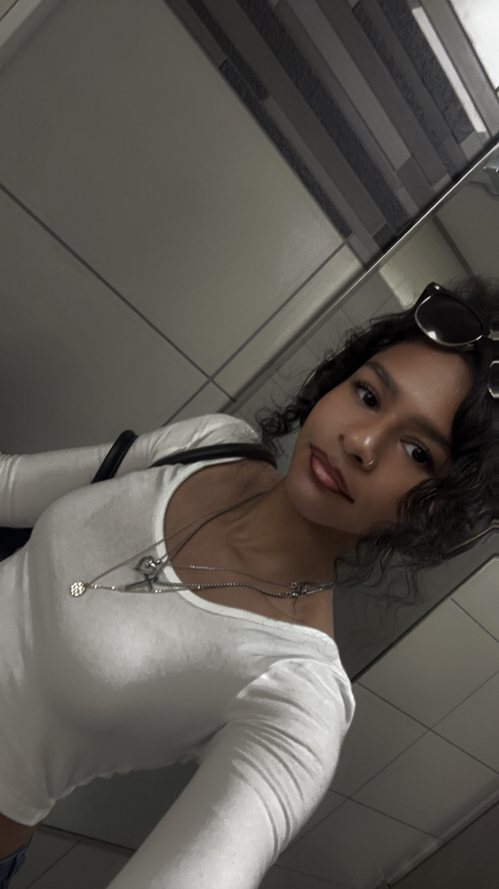

About Amber Davis
Amber Davis is a rising junior at Illinois State University, majoring in the Audio/Music Production Sequence of the Creative Technologies program. Her focus is Hip-Hop, R&B/Soul, and Lo-Fi. She has a specialization in creating beats for instrumental tracks.
Her music production journey began in high school when she realized that she wanted to go into the music industry following her college graduation. Experimentation began with Apple's GarageBand and Spotify's Soundtrap, creating instrumental tracks aligning mostly with Hip-Hop. While searching for ideas of what to study in college, the only major and sequence that resonated with her was the Creative Technologies program -- more specifically, the Audio/Music Production sequence. So, that's what she decided she would study for.
Inspiration of hers in her music production journey has been across the board in terms of genre; however, two of her biggest influences are Kali Uchis and Pierre Bourne.
Davis blends hip-hop with lo-fi to create a sound that’s fresh and emotionally resonant. Her production style focuses on organic textures and cinematic layers that makes each track instantly recognizable. She's not just producing tracks; she's building a brand and movement that resonates with the younger generation."
She bring out the best in artists by understanding their vision and fostering a creative and inspiring environment.
"I’m driven in refining my craft and staying on top of trends (if not ahead) while remaining adaptable to artists' unique needs."
~ Amber Davis